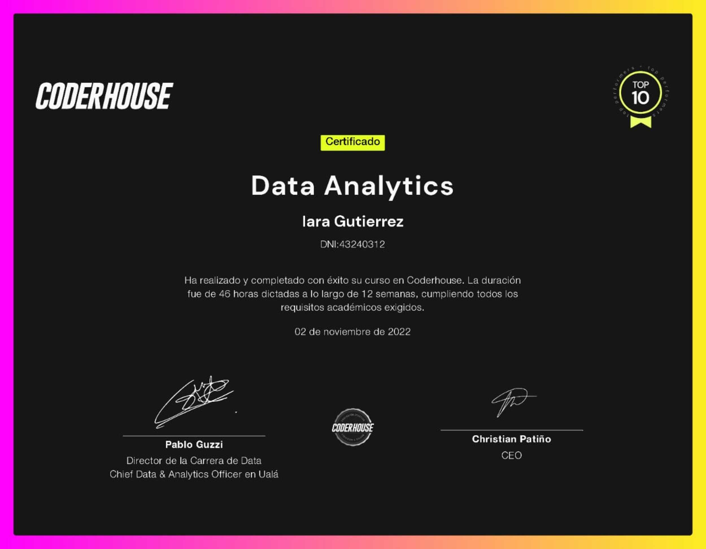

Experiencia
Analista de datos - La Haus (octubre 2022 / noviembre 2022)Me encargué de ayudar al equipo de marketing con la búsqueda de una mejora en la campaña de marketing digital. Desarrollé el tablero de control con todas las respuestas y clasificaciones requeridas.
Sobre mí
Hola, soy Iara Gutierrez analista de datos y estudiante de data science, trabajar
como data entry me llevó a entusiasmarme por la gestión de la
información con el fin de sacarle ventaja. Decidí especializarme en el análisis
de datos realizando cursos y estudiando de forma autodidacta para
superarme como Data Analyst (próximamente Data Scientist), y lograr una
mejor optimización y predicción de datos que sea precisa a las necesidades
de cada negocio.
Actualmente utilizo mis estudios para el desarrollo de proyectos en los que
tengo como objetivo poner a prueba mis conocimientos y así, poder lograr
una buena primera inserción laboral en el sector de Analista de Datos.
Mi meta es convertirme en experta en el área en la que me desempeño y
ampliar mis conocimientos de programación.
Trabajo bien en equipo y tengo un buen manejo de relaciones
interpersonales.
Educación
Data Science - CoderHouse
Actualmente sigo estudiando ciencias de datos, iniciándome en nuevos lenguajes de programación, como
Python, incursionaré en Machine Learning, IA, Algoritmos, perfeccionamiento
de SQL, programas de visualización de datos, entre otras cosas.
Terminare mis estudios como científica de datos en mayo de 2023.
Data Analytics - CoderHouse
Desde agosto del 2022 hasta noviembre del mismo año estudié análisis de datos donde aprendí a utilizar distintos lenguajes de programación y de visualización de datos; entre ellos SQLServer, Dash y Power BI. Certificado con honores de reconocimiento dentro del top 10 mejores promedios.
Licenciatura en economía - UBA
Comencé en abril de 2020, realicé el ciclo básico común (cbc, primer año) y actualmente estoy cursando el segundo año de la carrera.
Habilidades

Utilizo SQLServer para manipular, recuperar, seleccionar, administrar datos, crear tablas y definir relaciones entre ellas, etc.
Manejo Power BI para crear el modelo relacional y visualizar los datos.
También el lenguaje Dash que está en Power BI para sacar o agregar columnas
a partir de otras (como porcentajes, sumas, etc.). Entre otras cosas.

Utilizo Excel para obtener información a partir de grandes cantidades de datos, cálculos sencillos, y para realizar el seguimiento de casi cualquier tipo de información.

Poseo conocimientos avanzados del manejo de Adobe Photoshop, donde diseño logotipos para distintas empresas y personas, creo paletas de colores y edito imágenes publicitarias.
Tengo un nivel de inglés conversacional (B2), también manejo un alemán básico (A1). Actualmente estoy aprendiendo portugués.

En este momento estoy incorporando este nuevo lenguaje de programación con el que a futuro
podré crear sistemas de Machine Learning.
Manejo básico de los arrays de Python y de la librería Pandas.